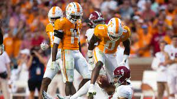

Miracle in Neyland
KNOXVILLE, Tenn. -- — After 15 years of being a rival to Alabama in name only, Tennessee snapped a humbling losing streak, stamped itself a championship contender and celebrated in spectacular fashion. Chase McGrath made a 40-yard field goal as time expired to give No. 6 Tennessee a 52-49 victory over No. 3 Alabama on Saturday. As soon as the kick knuckle-balled through the uprights, some of the more than 100,000 fans stormed the field to join the party as the Volunteers (6-0, 3-0 Southeastern Conference) ended a 15-game drought to the Crimson Tide (6-1, 3-1). Fireworks went off over Neyland Stadium and it glowed orange as the song “Dixieland Delight” by the band Alabama — a Crimson Tide favorite — blared over the stadium speakers. And it didn't take long for the goal posts to go down. “This is college football at its absolute best,” Vols coach Josh Heupel said. “We were the best team on the field tonight. That's all we can control.” “We didn't answer the bell today,” Alabama coach Nick Saban said. “We did too many things to help (Tennessee).” Hendon Hooker drove the Vols 45 yards in 13 seconds to set up the winner. An 18-yard pass to Ramel Keyton and 27-yard hookup with Bru McCoy set the stage for the winner. “It wasn't my cleanest hit,” said McGrath, who missed a PAT earlier. “I didn't have the best contact on the ball.” Jalin Hyatt caught six passes for 207 yards, setting a Tennessee record with five touchdowns and earning a postgame cigar — a long-held tradition in the third Saturday of October rivalry — with former Vols great Peyton Manning. Bryce Young, a game-time decision because of a sprained right shoulder two weeks ago, completed 35 passes for 455 yards and two TDs for the Tide. “It was great to be out there with my teammates,” the Heisman Trophy winner said. “Shoulder is fine.” Hyatt’s fifth TD catch tied it at 49 with 3:26 left in the fourth. “(This game) just happened," Hyatt said. “It's not just me. It was just the looks we got.” Young drove the Tide into the Tennessee territory in the final minute, but Alabama stalled at the 33 with three straight incomplete passes. Will Reichard’s 50-yard field goal attempt for the lead was wide way right. With only 15 seconds left, overtime seemed likely, but Hooker wasn’t done and did the Heisman winner one better. Hooker finished 21 for 30 for 385 yards and five TDs. “He played at an unbelievable level,” Heupel said. “He's the key to our ignition." Tennessee had not beaten a Top 10 teams since 2006 against Georgia. That was also the last year the Vols beat Alabama. A season later, Saban became Alabama's coach. While the Tide has become college football's greatest dynasty with six national titles, Tennessee has burned through coaches and been mired in mediocrity. In his second season in Knoxville, Heupel has pulled the Vols from the muck. Tennessee looks like a legitimate national title contender behind a transfer quarterback from Virginia Tech who should now be right near the top of those Heisman leaderboards. “We approach every game the same,” Hooker said. “Play 100% for our brothers.” A week after Alabama held Texas A&M out of the end zone on the last play of the game to dodge an upset, the Tide went down. The Vols scored the most points against an Alabama team since Sewanee put 54 on the Tide in 1907. The Tide also had 17 penalties for 130 yards, the most during the Saban era, according to ESPN. Tennessee’s up-tempo offense jumped out to a 21-7 first-quarter lead and led 28-20 at halftime. All four touchdown drives took over two minutes. Young threw for 205 yards and a touchdown in the first half, while Hooker had 166 yards and two scores. Young wasn't sacked, but was knocked down five times in the half. Alabama fumbled Tennessee's only punt. The Vols recovered and scored four plays later.
 Highlights of Game